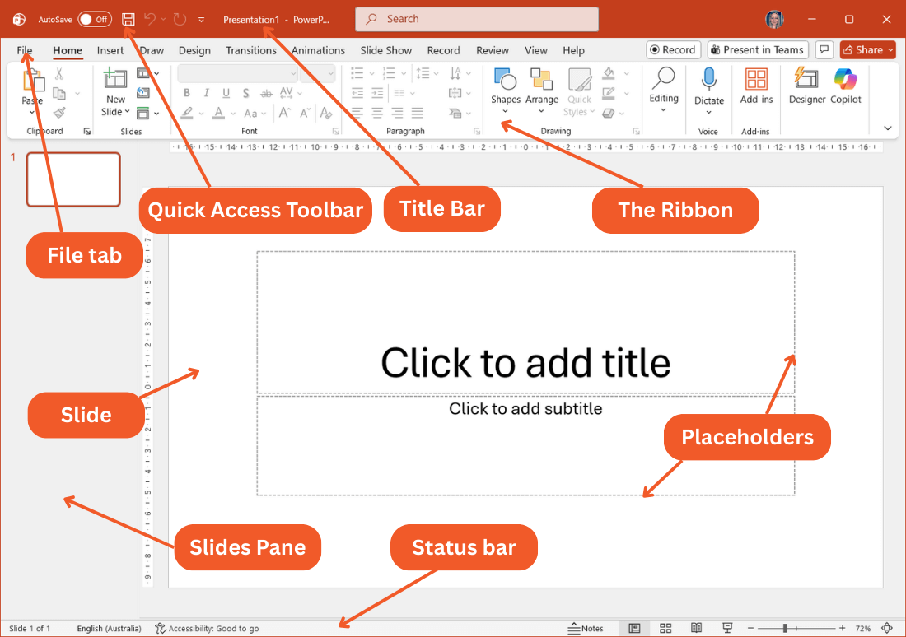

Microsoft PowerPoint Complete Beginner Guide
Microsoft PowerPoint is a presentation program used to create slideshows. It is commonly used for teaching, business meetings, school projects, and public presentations. PowerPoint allows users to combine text, images, charts, videos, and animations to communicate ideas clearly.
1. Introduction to PowerPoint
A PowerPoint presentation is made up of slides. Each slide can contain text, pictures, charts, or multimedia content. Presentations help explain ideas visually and make information easier for audiences to understand.
2. Understanding the PowerPoint Interface

- Title Bar – shows the presentation name
- Ribbon – contains tools and commands
- Slides Pane – displays all slides in the presentation
- Slide Workspace – where the slide is created and edited
- Status Bar – shows presentation information
3. Creating a New Presentation
They're all in the same uniform for opening new document (Word, Excel), see the guides below.
- Open Microsoft PowerPoint
- Click File
- Select New
- Choose Blank Presentation
4. Slide Layouts
PowerPoint provides different slide layouts to organize content.
- Title Slide
- Title and Content
- Two Content
- Comparison
- Blank Slide
You can choose your style...
5. Adding Text to Slides
Text boxes allow you to add titles, subtitles, and explanations. To add text:
- Click inside a text box
- Start typing your content
6. Inserting Images
Images help make presentations more interesting and easier to understand, same method as you did on Microsoft Word...
- Click Insert
- Select Pictures
- Choose the image
- Click Insert
7. Adding Shapes and Icons
Shapes and icons help highlight important information.
- Arrows
- Circles
- Rectangles
- Icons
8. Slide Design
PowerPoint provides design themes that automatically style your presentation with colors, fonts, and layouts.
To apply a theme:
- Click the Design tab
- Choose a theme
9. Slide Transitions
Transitions control how one slide changes to the next slide.
Examples include:- Fade
- Push
- Wipe
- Split
10. Animations
Animations control how objects appear on a slide.
Examples include:- Appear
- Fade In
- Fly In
- Zoom
11. Running a Slide Show
To present your slideshow:
- Click the Slide Show tab
- Select From Beginning
You can move between slides using arrow keys or mouse clicks.
12. Saving and Printing
- Click File
- Select Save As
- Choose location
- Enter file name
- Click Save
Tips for Creating a Good Presentation
- Use simple text
- Avoid overcrowding slides
- Use images to explain ideas
- Use consistent colors
- Keep slides clear and readable
Have you ever heard about freelance or fiverr before or this is your first time? you can find a job here and start making dollars with your simple skills, not too hard, just create your account on fiverr app or on your browser here: Fiverr Account. then after creating your account do a research on any trusted browser or search engines to tell you what fiverr is to clear your doubts, create a perfect profile that lies with your skills.